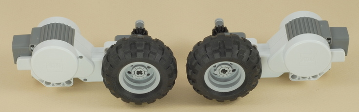
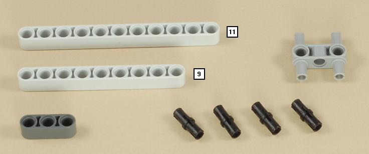
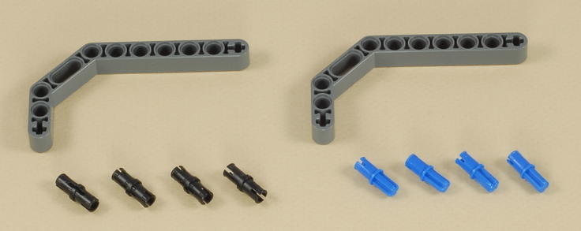
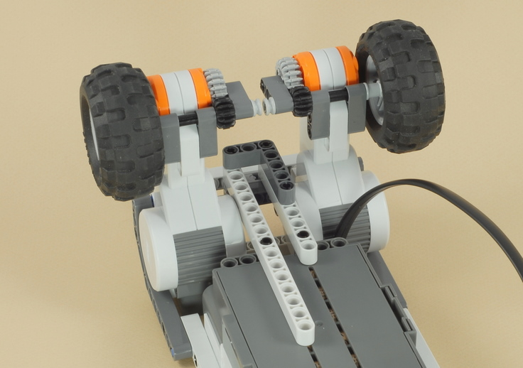
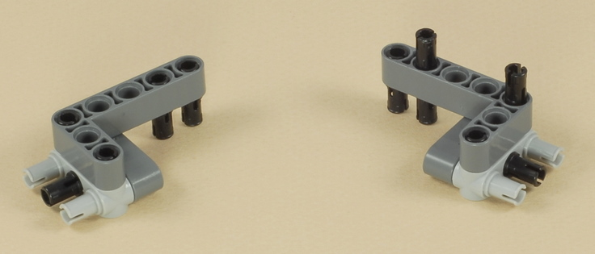
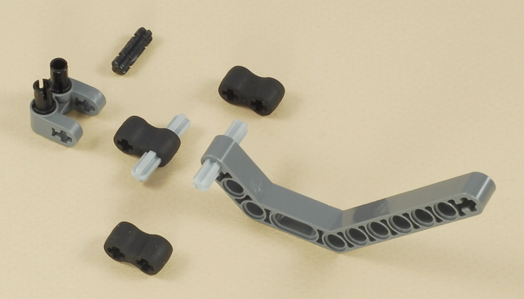

Fun Projects for your LEGO� MINDSTORMS� NXT!
|
|
Fun Projects for your LEGO� MINDSTORMS� NXT! |
| Puppy |
|

1
2
3
| Note: The two size 4 axles in this step would really be better as size 5 axles, but all the rest of the size 5 axles from the standard NXT kit are used elsewhere in this project. If you have any extras, you could use size 5 axles instead. |
4

5
6

7

| Important: Make sure that the wire from port 4 ends up coming out under the body as shown below: |
8

9

10
11
| The motor will attach to the body with 3 pegs on this side,... |
| ...and 2 pegs on this side,... |
| ...then you will need to work a bit to get the last peg in the 7-hole beam brace as shown below: |
12

13

| Make sure that the axles are centered on the wheels as shown below. |


14
15

16
17
Attach the other side of the two sensor wires as
follows:
|
| Important: Make sure that the sensor wires go on the left side of the puppy's neck as shown below. |
18


19
Attach the three motor wires and route them under the
puppy as shown below:
|
| Important: Make sure that all five wires go on the left side of the puppy's neck as shown below. |
20
| Puppy Programming Two programs are provided for your puppy. With the Puppy Leash program, you can walk your puppy with its leash and control when it stops and which way it turns by pressing the touch sensor on the leash. See the instructions below. With the Puppy program, the puppy will explore around your room by itself, trying to avoid walls and listening for your voice to call it. See the instructions below. |
Important Instructions
| Use on smooth hard floors. | Do not use on carpet. | Make sure the head starts out pointing straight ahead |
How to Walk your Puppy with the Leash When using the Puppy Leash program, the ultrasonic and sound sensors in the puppy's head are not used, but you can control the puppy with the touch sensor on the leash.
How to Control your Puppy without the Leash Can you really control a puppy that is not on a leash? Well, with this puppy you will have some limited control... When you use the Puppy program, the puppy will start to explore around your room, trying to avoid walls and other obstacles using its ultrasonic sensor. But you can also get it to turn the way you want by calling out to it, and it will (hopefully) hear you with its sound sensor.
|
|
Why the Puppy Doesn't Turn Well on Carpet: Weight Balance The front castor wheels on this puppy work OK on smooth hard floors, but if you try the puppy on carpet, you will find that it doesn't turn well. This is an example of a very common problem with LEGO robots -- poor weight balance. To turn easily, you want most of the weight of the robot on the wheels that are driven by the motors, and less weight on any other wheels or parts that are just along for the ride. But this puppy has less than half of the total robot weight over the drive wheels. As determined by the experiment below with a small
scale, the Puppy has 474 grams of weight over the front castor wheels,
and only 432 grams over the rear drive wheels. This works out to
only about 48%
|
Challenges
|
|
Copyright
�
2007-2009 by Dave Parker. All rights reserved. |